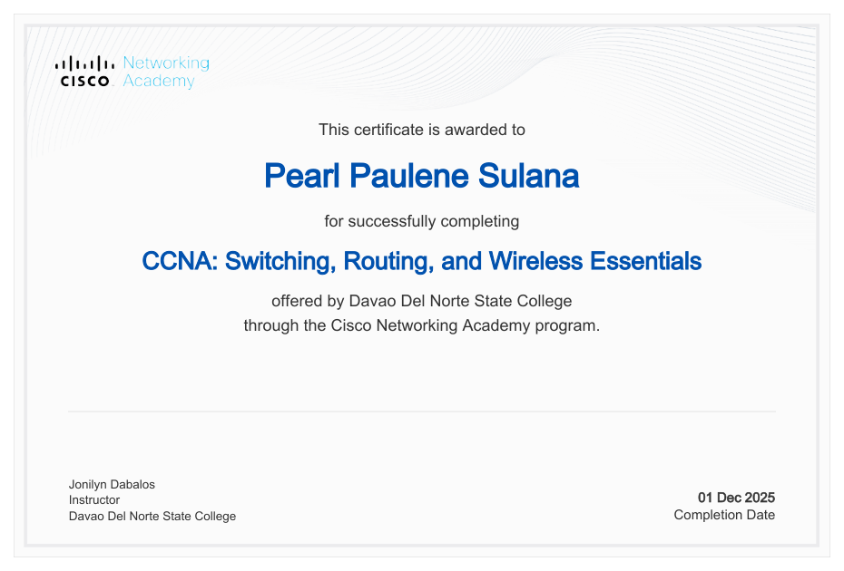

Analyze &
organize
Understanding requirements and arranging information with purpose.
- System analysis
- Requirements gathering
- Data organization
HELLO, I'M
PEARL PAULENE S. SULANA
Bringing structure to information.
Bringing clarity to ideas.
PROFILE PHOTO TO FOLLOW
Davao del Norte
State College
I'm a detail-oriented fourth-year Information Technology student at Davao del Norte State College, with a focus on documentation, system analysis, and professional presentations.
I enjoy organizing information, understanding system requirements, and communicating technical concepts in a way that helps teams make sense of complex systems and processes.
To contribute to an internship or entry-level opportunity in system analysis, technical documentation, or project support, while developing practical skills and helping teams turn requirements into clear, actionable information.
The tools and practices
behind how I work.
Understanding requirements and arranging information with purpose.
Turning technical ideas into clear, useful written material.
Giving information a visual structure that makes it easier to follow.
Learning the systems, processes, and communication behind technology.
2023 — 2027 / EXPECTED COMPLETION
Davao del Norte State College
4th Year · BSIT 4D
System Analysis & Documentation2020 — 2022
A.O. Floirendo National High School
Information and Communications Technology (ICT) Strand
A professional online introduction that organizes my background, education, skills, and career interests into a clear, accessible experience.
Selected coursework from my academic portfolio. Technologies below describe each project.
A web and mobile cooperative management system covering membership, loans, savings, dividends, and a blockchain-integrated audit trail.
My role: Capstone documentarian.
Project overview & previews ↗A mobile machine learning project for identifying banana plant diseases from images, with disease classification and treatment recommendations.
Project overview & previews ↗An academic chess app project presented through interface design and promotional materials in my HCI and Technopreneurship portfolio.
Project materials & videos ↗ PlayMate live demo ↗I serve as the documentarian for our CoopNexus capstone project. My academic work also includes group and pair projects such as BananaGuard and PlayMate, alongside this individual IT415 CV website.
Explore the project ↑
Offered by Davao Del Norte State College through the Cisco Networking Academy program.
Completed
View certificate (PDF) ↗Technical writing · Business process analysis · Information architecture · System design · Project documentation
Interested in learning opportunities, thoughtful collaboration, and work that makes information more useful.
Let's connect